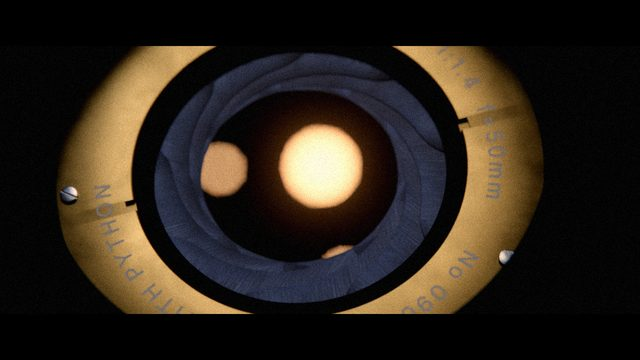
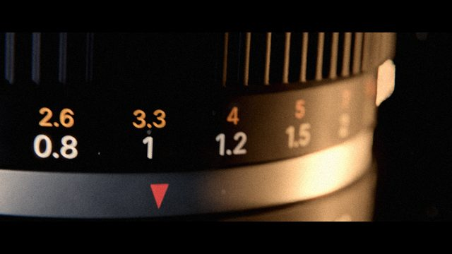
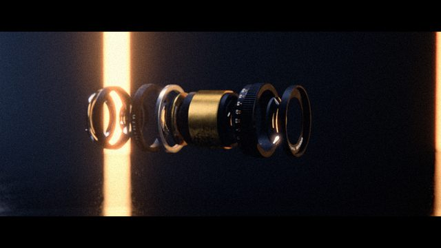
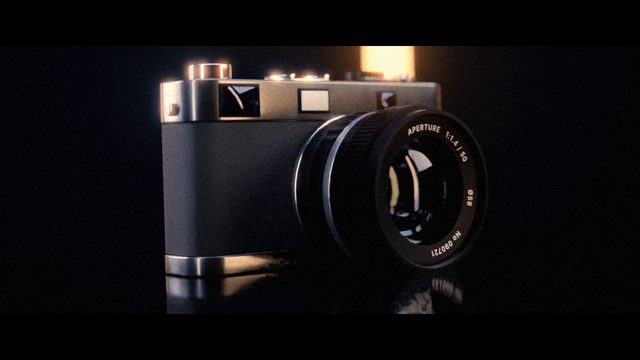
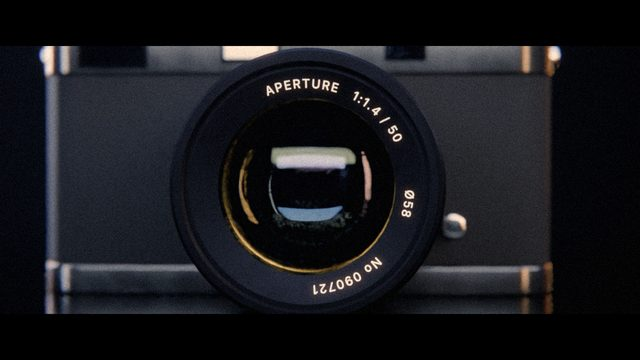
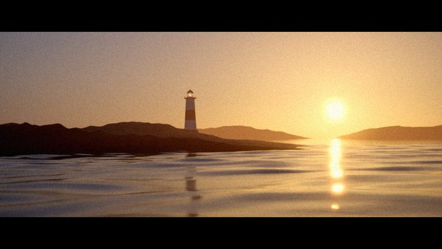
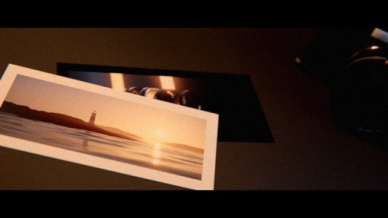
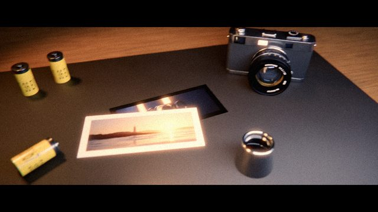
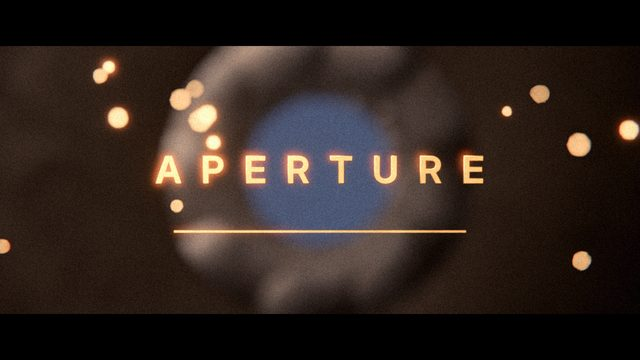

작업 흐름
- 입력
- 주제 하나(시계, 렌즈, 엔진, 악기, 제품 …). 레퍼런스 영상이 있으면 그 스틸과 측정값
- 브리프
- 가장 작은 메커니즘, 그것이 속한 물체와 부품 목록(실제 치수), 쓰이는 세계, 책상 위의 사진, 돌아가는 길, 한 단어 제목. 샷마다의 스케일 · 렌즈 · 움직임 · 컷, 팔레트 · 재질 · 조명 · 소리를 적은
BRIEF.md - 모델 · 샷
lathe·prism·tube로 실제 크기의 부품, 닳고 결이 있는 재질, 코드로 그린 각인. 샷 하나가 파일 하나: 세트와 조명 → 피사체 → 움직임 → 렌즈, 단계마다 미리보기 스틸- 확인
- 샷마다 처음 · 중간 · 끝을 모은 콘택트 시트와 밝기 수치, 스틸 검토 기준 채점, 자동 검사(빌드 · 조명 · 초점 · 검거나 날아간 프레임 · 움직임 · 같은 프레임을 두 번 렌더한 결과의 일치)
- 출력
- 리니어 EXR 프레임 → 필름 룩을 입힌 PNG → 24fps 1920×1080(화면 2.39:1) MP4, 합성 사운드 WAV, MP4 없이 웹에서 도는 프레임 시퀀스 페이지
pip install bpy pillow numpy
cp -r photoreal-film/starter my-film && cd my-film
python3 ../photoreal-film/scripts/render.py --still s01:0.5,s02:0.5
python3 ../photoreal-film/scripts/contact.py --q preview
python3 ../photoreal-film/scripts/check.py
python3 ../photoreal-film/scripts/render.py --all --q final
python3 ../photoreal-film/scripts/finish.py
python3 ../photoreal-film/scripts/score.py
python3 ../photoreal-film/scripts/encode.py
python3 ../photoreal-film/scripts/new_film.py ~/my-topic --title "WORD" --shots macro,parts,hero,world,print,title요구 사항: Python 3.13 + bpy 5.x(Blender의 파이썬 모듈), numpy, Pillow, ffmpeg. GPU가 없어도 됩니다(CPU 4코어에서 미리보기 스틸 5–10초, 본편 프레임 14–45초). 단계별 순서는 SKILL.md에 있습니다.
샘플
원본 영상에 없는 주제(카메라 렌즈)로 브리프부터 새로 설계한 예제의 아홉 샷, 바로 돌려 볼 수 있는 시작 프로젝트, 검토용 이미지입니다. 영상은 화질과 용량 때문에 12fps 프레임 시퀀스로 올렸고, 카드를 누르면 그 샷이 멈춘 채 열립니다.
「APERTURE」 주제: 카메라 렌즈 · 18초 · 9샷 · 432프레임
조리개가 열리고, 눈금 링이 돌고, 열다섯 부품이 한 렌즈가 되어 카메라에 물리고, 그 카메라가 찍은 바다가 책상 위 인화지였다는 것이 드러난 뒤 다시 렌즈 안으로 들어갑니다. 텅스텐 호박색과 강철 파랑, 황동과 빨간 페인트만 채도가 있는 팔레트

샷 01 · 매크로 3cm조리개가 열림100mm f/16, 축에서 비껴 밀고 들어가는 카메라. 날마다 다른 톤은 빛을 비추는 상자 하나에서

샷 02 · 매크로 3cm눈금 링경통을 따라 올라가는 크레인, 초점 링이 돌고 조리개 링이 두 번 딸깍. 각인은 코드로 그린 띠 이미지

샷 03 · 25cm열다섯 부품이 한 렌즈로분해도에서 시작해 가운데부터 차례로 제자리에. 나사산이 있는 링은 돌면서 들어감

샷 04 · 40cm바디에 물림렌즈가 날아와 55° 돌아 잠김. 낮은 3/4 앵글, 형태를 그리는 긴 조명 상자 두 개

샷 05 · 15cm노출유리 정면. 조리개가 조여지고 화면이 하얗게 타 버림 — 다음 샷으로 넘어가는 컷

샷 06 · 3km렌즈가 보는 세계물리 기반 하늘(해 고도 3.2°), 스펙트럼 해양, 수면 가까이 떠가는 38mm

샷 07 · 60cm그것은 사진이었음앞 샷의 프레임이 인화지로. 사진이 화면을 꽉 채운 높이에서 시작해 들어 올리는 카메라

샷 08 · 60cm → 1cm다시 안으로천천히 시작해 렌즈 앞 유리로 돌진, 조리개가 닫히며 암전

샷 09 · 타이틀APERTURE글자도 장면 속의 물체: 황동 재질, 초점면, 같은 그레인. 뒤에서 조리개가 천천히 돎
「STARTER」 시작 프로젝트 2샷 · 3.5초
복사해서 바로 렌더되는 가장 작은 영화입니다. 널링과 각인 눈금이 있는 황동 다이얼 한 개, 그리고 타이틀. 새 주제는 여기서 시작해 전부 바꿉니다
검토 콘택트 시트 · 원본 분석
렌더 전에 모든 샷의 처음 · 중간 · 끝을 한 장에서 보고, 밝기 수치를 원본에서 잰 범위와 비교합니다
실제 작품
이 스킬을 만든 출처와, 이 레포에서 새 주제로 만든 예제입니다.
원본 · Leon Lin의 X 게시물「ESCAPEMENT」 36.5초 · 시계 탈진기 → 자동차 → 시계 사원 → 책상 위 엽서 → 회중시계. "every frame is python, no 3D assets were used"x.com/LexnLin/status/2119558994352304202
「APERTURE」카메라 렌즈 · 18초 · 9샷 · 프레임 시퀀스 페이지photoreal-film/examples/aperture
원본 레포 · motion-skills이 레포에서 만듦github.com/jungrok5/motion-skills
링크
- SKILL.md 워크플로
- 폴더 lib · scripts · templates · starter · examples
- README.md 빠른 시작
- references/BRIEF.md 주제 → 브리프, 스틸 검토 기준
- references/LOOK.md 원본 분석과 목표 수치
- references/SHOTS.md 스케일의 사슬 · 샷 종류 · 컷 · 조명 레시피
- references/KIT.md pf 라이브러리: 모델링 · 재질 · 조명 · 카메라 · 룩 · 사운드
- references/LESSONS.md 겪은 문제와 해결
- examples/aperture/BRIEF.md 예제의 브리프와 채점표